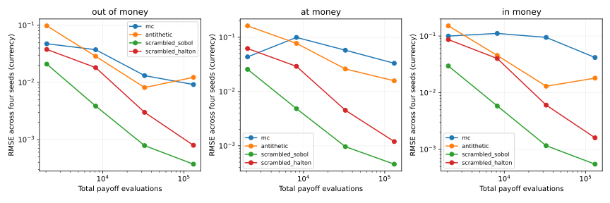

Monte Carlo estimation
Accuracy under a fixed sampling budget
Compare Monte Carlo and randomized quasi-Monte Carlo for European option pricing.
At-the-money RMSE: 0.000459 Sobol; 0.0332 Monte Carlo.
Motivation
How much estimator error remains when every method receives the same number of payoff evaluations?
Implementation
Plain Monte Carlo, antithetic normals and scrambled Sobol/Halton sequences estimate discounted European-call payoffs. Three synthetic contracts, four budgets, four outer seeds and sixteen independent replications are checked against Black–Scholes.
Results
At 131,072 payoff evaluations per estimate, at-the-money price RMSE across four seeds is 0.000459 for Sobol and 0.0332 for plain Monte Carlo. Antithetic pairs count as two evaluations.
Limitations
Results concern one-dimensional, constant-volatility risk-neutral GBM with zero dividends. Replication-based intervals are approximate. These observations do not establish general pricing superiority or market-prediction accuracy.
